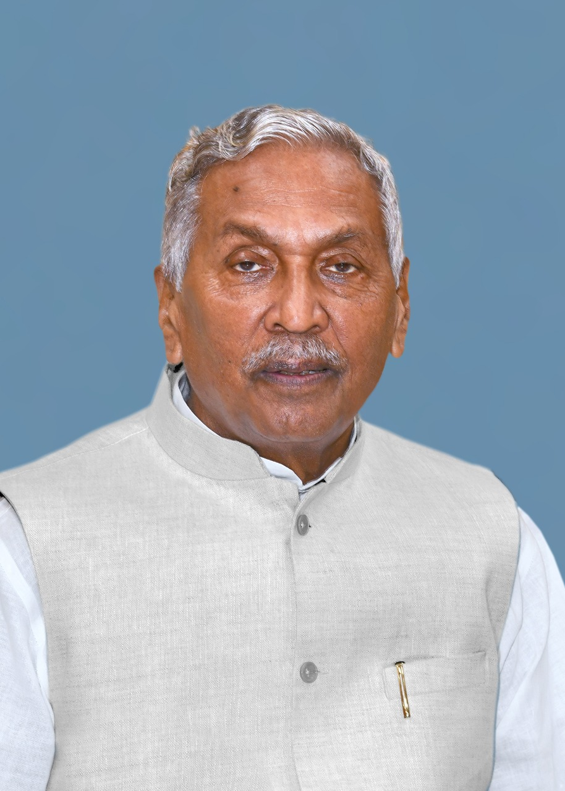

MAULANA MAZHARUL HAQUE born in a privileged family
was sent to England to study law. When he finished his law degree he came back to practice law in India. His Profession
gave him the opportunity to understand the overwhelming problem facing the Indian public under British Rule. This drew him
closer to Mahatma Gandhi and he joined the freedom struggle to make Indian independent nation. He was a legal luminary, a statesman, an educationa
list, a journalist, a poet and a philosopher combined in one. A staunch nationalist and a firm believer in secular foundations
of this country he believed that "whether we are Hindus or
Mussalmans we are in the same boat. We must sail or sink together."

ViceChancellorDesk
Prof. Girish Kumar Choudhary
Season's Greetings from Maulana Mazhrul Haque Arabic & Persian Uni
versity, Patna. The University has a distinct identity. Besides serving the needs of Madrasa syst
em of higher education, conducting Alim—Fazil examinations, the University has come to stamp its name in the
mainstream education, caring to the needs of lacs of students from the downtrodden, marginalised & extremely poor and backward section of society, and also women, particularly muslim women who had been particularly hesitant to join the mainstream education under adverse economic scenario or social taboo. It is a renaissance in a new avtar, with University's vision and mission spreading far and wide stretched to the 38 districts of the state, imparting higher education in regular mode, in contrast to distance mode of education, improving GER of the State.
I extend my thanks to all the staff and officers of the University, hon'ble members of the Statutory Bodies including Syndicate and Senate, at the dawn of a new year and an era unfolding universal messages of devotion, education and human values which in turn reflect the principles of tolerance, peace, brotherhood and prosperity.
MAULANA MAZHARUL HAQUE ARABIC AND PERSIAN UNIVERSITY Patna was established under the provisions of the Bihar State Universities Act. 1976 (as amended by Bihar Act.9, 1992) with effect from 10 April 1998 (vide MHRD, Govt. of Bihar notification no. 1998 dated 22 November 2006). The Jurisdiction of this University is whole of Bihar and it is recognized under 2(f) of the UGC Act 1956. The University is enrolled as a member of Association of Indian Universities (AIU) New Delhi with effect from December 2009.
In its legacy the University has eight Vice Chancellors, namely Prof. M. Ahmad Arzoo, HoD of Arabic, Aligarh Muslim University (10/04/1998---------), Prof. M. Sharaf-e-Alam, HoD of Persian, Patna University, Patna (14/05/2004 to 14/05/2007), Shri V.S. Dubey Ex-Chief Secretary of Bihar and Jharkhand, (Additional Charge 18/05/2007 to 24/01/2008), Prof. Qamar Ahsan, HoD, Economics A.N. College, Patna, Magadh University, Bodh Gaya, (25/01/2008 to 24/01/2011), Prof. Md. Shamsuzzoha, HoD, Arabic, Patna University, Patna (25/01/2011 to 20/03/2013), Dr. E.L.S.N. Bala Prasad, IAS, Divisional Commissioner, Patna (Additional Charge 27/04/2013 to 23/07/2013) and Prof. Syed Jalil Ahmad, Deptt. of English B.N. Mandal University, Madhepura, (27/07/2013 to 31/01/2014).
Prof. (Dr.) Ejaz Ali Arshad former Head, P.G. Dept. of Urdu, Dean, Students' Welfare and Dean, Faculty of Humanities, Patna University, Patna (01/02/2014 to 31-01-2017)
Prof. (Dr.) Mumtazuddin was given additional charge as Vice Chancellor of this University from 06/02/2017. Prof. (Dr.) R. K. Sinha was also given additional charge as Vice Chancellor of this University from 11/08/2017 to 18/04/2018.
Prof. (Dr.) Khalid Mirza assumed the charge of Vice Chancellor on 19/04/2018.
Prof. Surendra Pratap Singh assumed charge of Vice Chancellor in the afternoon of 17/04/2021. He continued till 22/0/2021
Prof. Md. Quddus assumed charge of Vice Chancellor in the forenoon of 23/08/2021 and continued till 17-01-2022.
Prof. Girish Kumar Choudhary assumed charge of Vice Chancellor in the afternoon of 17-01-2022.
Prof. (Dr.) Qamar Ahsan along with Prof. (Dr.) Khalid Mirza as Pro-Vice Chancellor made his purposeful effort to make this University functional by starting the first academic session on July 3, 2008 and organized the first Convocation on 22nd December 2010. Prof. Md. Shamsuzzoha started regular courses at undergraduate level in Arabic, Persian, Urdu, English, under the Dept. of History, Language & Culture in the Headquarters and conducted the second Convocation on 22 December 2012. Dr. E.L.S.N. Bala Prasad (IAS) got sanction to start eight postgraduate departments and some translation courses in the university headquarters.
Department of English
Dr. Md. Ejaz Alam, Associate Professor and Head
Dr. Neha Dubey, Assistant Professor
Dr. Md. Naushad Alam, Assistant Professor
Department of Urdu
Dr. Zarnigar Yasmeen, Assistant Professor and Head
Dr. Tauqeer Alam, Assistant Professor
Department of Islamic Studies
Dr. Md. Abrarul Haque, Assistant Professor
Dr. Mohd Tahseen Zaman, Assistant Professor
Dr. Mohd Mumtaz Alam, Assistant Professor
Department of Arabic
Dr. Anwarul Hasan, Assistant Professor
Dr. Zakir Hussain Jamshed, Assistant Professor
Dr. Md Mahfoozur Rahman, Assistant Professor
Department of Persian
Dr. Md Jamshed Alam, Assistant Professor
Department of Journalism & Mass Communication
Dr. Ranjit Kumar, Assistant Professor
Dr. Mukesh Kumar, Assistant Professor
Department of Education
Guest Faculties
Department of Management
Guest Faculties
MISSION
visionArea